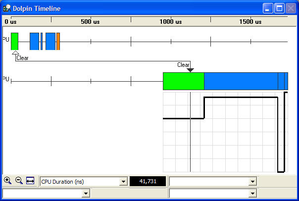
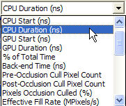
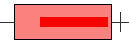
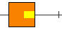
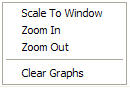

If PIX recorded both timing and push-buffer data, then the Timeline window should look similar to the following:

The top bar of the Timeline window gives the time scale. Below that are the CPU and GPU timelines, which are connected by a pair of pointers. These pointers show how events in the CPU timeline correspond to events in the GPU timeline.
Beneath the GPU timeline is a grid that can graph up to four different statistics. You choose what to graph by selecting one of the choices from the drop-down lists at the bottom of the window.

To help distinguish between events, each type of event has its own color:
| Event | Color |
|---|---|
| Clear | |
| DrawVertices, DrawVerticesUP, DrawIndexVertices, DrawIndexedVerticesUP |  |
| Swap | |
| VBlank | |
| VBlankMissed | |
| VBlankSwap | |
| BlockOnSwap, BlockUntilIdle, BlockOnFence, BlockOnPushBuffer, BlockOnObject | |
| CopyRects | |
| Summary |  |
| Begin/End | |
| LockPalette, LockVertexBuffer, LockTexture, LockSurface | |
| User Event | |
| User Marker | |
| Begin/EndPush | |
| RunPushBuffer | |
| DrawTri/RectPatch | |
| PrimeVertexCache | |
| SetRenderTarget, SetRenderTargetFast | |
| KickPushBuffer |
For a full description of each event, see PIX Timing Capture.
To help distinguish a block event from one of the other events, the block event is rendered as a bar inside one of the other events, as the following picture demonstrates.

Illustration A block event inside a lock event.
KickPushBuffer events can also occur inside of other events:

Illustration A KickPushBuffer event inside a swap event.
Left-clicking in the Timeline window moves the pointers to that location and updates the other windows. For example, if the Images Window is active, moving the timeline pointers updates the images in the window to reflect what is happening at that point in time.
Right-clicking in the Timeline window causes the context menu to pop up.

Clicking Scale To Window scales the timeline to fit into the window. Clicking Zoom In or Zoom Out either zooms in or out, centered on the black timeline pointer. Clicking Clear Graphs clears the statistics graphs from below the GPU timeline.